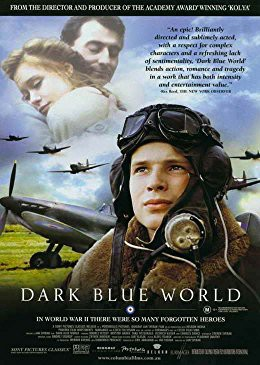

#8412 Leidenschaft in dunklen Tagen
Alternativ: Dark Blue World (Englischer Titel)
 
 IMDB-Wertung: 7.3 / 10
IMDB-Wertung: 7.3 / 10  Metascore: 0
Metascore: 0 
March 15, 1939: Germany invades Czechoslovakia. Czech and Slovak pilots flee to England, joining the RAF. After the war, back home, they are put in labor camps, suspected of anti-Communist ideas. This film cuts between a post-war camp where Franta is a prisoner and England during the war, where Franta is like a big brother to Karel, a very young pilot. On maneuvers, Karel crash lands by the rural home of Susan, an English woman whose husband is MIA. She spends one night with Karel, and he thinks he's found the love of his life. It's complicated by Susan's attraction to Franta. How will the three handle innocence, Eros, friendship, and the heat of battle? When war ends, what then?
Jahr: 2001
Dauer: 114 Minuten
FSK: 12
Land: Tschechische Republik Studio: Buena Vista InternationalTonspuren:
Untertitel: Deutsch,
Auflösung: 1080p (1920x792) Größe: 5263 MB
Genre: Action, Drama, Krieg, Liebe
Regisseur: Jan Sverák
Drehbuch: Zdenek Sverák
Soundtrack: Ondrej Soukup
Darsteller:
- Ondrej Vetchý als Frantisek Sláma
 Krystof Hádek als Karel Vojtisek
Krystof Hádek als Karel Vojtisek Tara Fitzgerald als Susan Whitmore
Tara Fitzgerald als Susan Whitmore Charles Dance als Wing Commander Bentley
Charles Dance als Wing Commander Bentley- Oldrich Kaiser als Jan Machatý
- David Novotn�� als Bedrich Mrtvý
- Linda Rybová als Hanicka Pecharova
- Jaromír Dulava als Railwayman Kanka
- Radim Fiala als Jura Sysel
 Miroslav Táborský als Vilha Houf
Miroslav Táborský als Vilha Houf- Hans-Jörg Assmann als Doctor Blaschke
- Thure Riefenstein als German Officer Hesse
- Anna Massey als English Teacher
- Viktor Preiss als Major Skokan
 Jeremy Swift als Cpl. Pierce
Jeremy Swift als Cpl. Pierce- Jirí Lábus als Pub Landlord
- Daniela Kolárová als Pecharova
- Horst-Günter Marx als
- Anna Veselá als Jeannette
- Filip Renc als Projectionist
- Filip Cervinka als Pilot Cerny
- Jan Sverák als Pilot (uncredited)
- Zdenek Sverák als Indian RAF member, riding on a bicycle (uncredited)
- Lukás Kantor als Tom Tom
- Juraj Bernáth als Jan Gregora
- John Warnaby als RAF Instructor
- Petr Burian als Vrba Vlastik
- Cestmír Randa als Pavlata (Armourer)
- Sophie Wilcox als WAAF Jane
- Caroline Holdaway als Mrs. Brett
- Charlotte Fairman als WAAF Sally
- William Scott-Masson als Susan's Husband
- Zdenek Dvorák als
- Jan Dvorák als Bustik (Prison Guard)
- Martin Sitta als
- Frantisek Rys als
- Ashley Clish als Beth (4 Years Old)
- Lexie Peel als David (7 Years Old)
- Blaise Colangelo als Twin (Ann)
- Sienna Colangelo als Twin (Mary)
- Monika Petru als
- Gemma Scrimgeour als Girl (10 Years Old)
- Rhian Heppleston als WAAF
- Ondrej Paskudo als
- Lucy Fillery als WAAF
- Karolína Simácková als
- Amy Huck als WAAF
- William McEnchroe als Radio Operator 2
- Noel le Bon als Telephone Operator
- Timothy Otis als Radio Operator 1
Datei: X:\2001\Leidenschaft in dunklen Tagen (2001, FSK12, 1920x792).mkv seit 01.03.2018
Festplatte: HD 1996-2002
 Es gibt insgesamt 102 Filme in der Gruppe '2001'
Es gibt insgesamt 102 Filme in der Gruppe '2001'